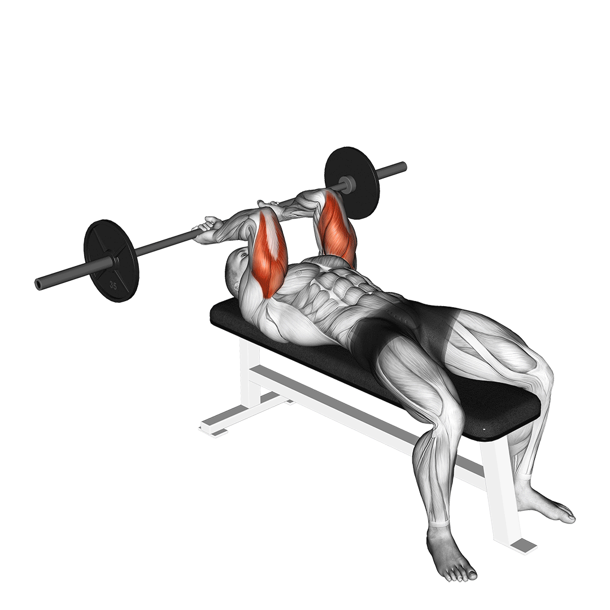
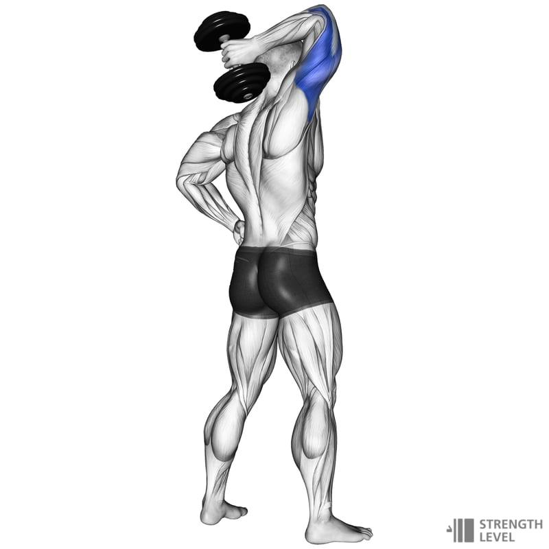

Triceps Extension

Opis ćwiczenia:
To ćwiczenie wielostawowe doskonale angażuje triceps oraz mięśnie naramienne. Pomaga w rozwoju siły i stabilizacji górnej części ciała, a także poprawia funkcjonalność ruchów nad głową.
Technika:
- Stań za bramą i chwyć za warkocz
- Wypchnij ciężar nad głowę, utrzymując stabilizację.
- Powoli opuść ciężar do pozycji startowej.
Angażowane mięśnie:
- Mięsień trójgłowy ramienia (triceps)
- Mięśnie naramienne
- Mięśnie stabilizujące tułów
Prostowanie ramion na wyciągu z krzywym drążkiem

Opis ćwiczenia:
To jedno z najlepszych ćwiczeń na izolację tricepsa, szczególnie skuteczne w budowaniu jego siły i definicji. Krzywy drążek ułatwia utrzymanie naturalnej pozycji nadgarstków, redukując napięcie na stawy.
Technika:
- Stań przodem do wyciągu i chwyć krzywy drążek nachwytem.
- Prostuj ramiona w dół, utrzymując łokcie blisko tułowia.
- Kontrolowanie wróć do pozycji startowej.
Angażowane mięśnie:
- Mięsień trójgłowy ramienia (triceps)
- Mięśnie stabilizujące obręcz barkową
Wyciskanie francuskie sztangą

Opis ćwiczenia:
Wyciskanie francuskie sztangą to doskonałe ćwiczenie izolujące triceps, szczególnie jego długą głowę. Pozwala na efektywne rozwijanie siły i masy mięśniowej ramion.
Technika:
- Połóż się na ławce płaskiej i chwyć sztangę wąskim nachwytem.
- Unieś sztangę nad głowę, utrzymując łokcie w stabilnej pozycji.
- Powoli opuszczaj sztangę w kierunku czoła, kontrolując ruch.
- Wyprostuj ramiona, wracając do pozycji wyjściowej.
Angażowane mięśnie:
- Mięsień trójgłowy ramienia (triceps)
- Mięśnie stabilizujące barki
Zginanie tricepsa hantlem nad głową

Opis ćwiczenia:
Jest to jedno z najlepszych ćwiczeń na pełne rozciągnięcie i napięcie tricepsa. Angażuje całą długość mięśnia, co pomaga w budowaniu jego objętości.
Technika:
- Usiądź prosto i chwyć hantel oburącz.
- Opuść ciężar za głowę, trzymając łokcie blisko głowy.
- Wyprostuj ramiona, wracając do pozycji startowej.
Angażowane mięśnie:
- Mięsień trójgłowy ramienia (triceps)
- Mięśnie stabilizujące tułów i barki